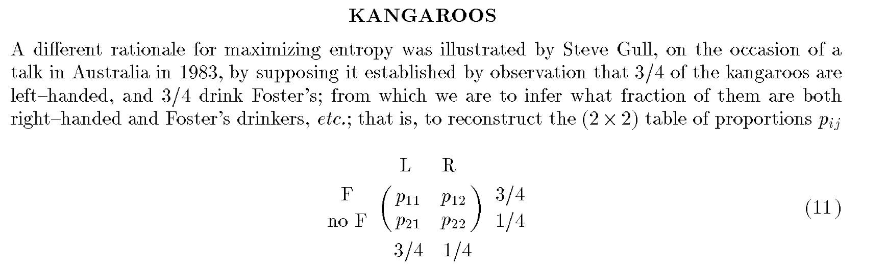
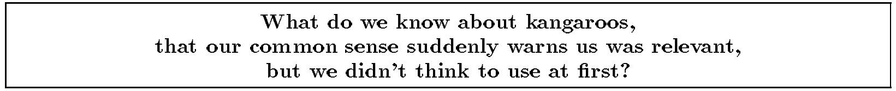

Ahead of starting a new gig next week (wooo!), I was reviewing a bit about multilevel models, and came across this fascinating footnote in Richard McElreath’s Statistical Rethinking:
See Jaynes (1986) for an entertaining example concerning the beer preferences of left-handed kangaroos. There is an updated 1996 version of this paper available online.
I’m not sure what it is with Bayesians and wild, fantastic adventures in the footnotes1, but obviously I couldn’t not chase this one down. Also, the paper didn’t immediately pop up when I googled “beer preferences of left-handed kangaroos”, so hopefully this post gets a few people where they’re going.
I mostly started this post to have a reason to DALL-E a (left-handed) kangaroo drinking a Foster’s, but the more serious content of the post discusses different conceptions of maximum entropy, and how useful the idea is in building prior distributions for Bayesian inference.
Why on earth are we talking about kangroos’ beer preferences?
To be clear, we’re actually talking about the joint distribution of beer preferences of kangaroos and their handedness. Why?
In the time-honored tradition of taking a joke and continuing to run with it until it’s funny, E.T. Jaynes is extending an example due to Steve Gull2 to discuss the properties of maximum entropy priors:

Extending analysis of this scenario then provides a tutorial in prior specification.
For example, the first piece of intuitive prior knowledge that Jaynes shares is that kangaroos are (for most practical purposes) indivisible3. Constraining acceptable priors to ones with integer solutions tweaks the problem and corresponding reasonable priors a bit.
From there, the article provides a nice example of a difficult Bayesian task: taking our priors seriously, and seeing how we feel about what they imply. For example, when taken to large N4, the simplest maximum entropy prior starts to become remarkably confident about the unknown proportions p above. The question that arises is whether our intuition about p were poor, or whether we have hidden prior information to incorporate (i.e: do we know that kangaroos are likely to be related given they are drawn from the same genetic pool and environment)?

With the ensuing sermon5, Jaynes makes the case that maximum entropy remains a useful, logical tool for building priors. Interestingly, this argument has a different presentation of maxent than more recent pieces that place these priors alongside reference, Jeffreys, or invariance-based priors6. Jaynes instead lays out a presentation that feels more like a workflow, with maximum entropy itself providing a starting point.
But first, more kangaroo facts
Just like our understanding of Bayesian inference has advanced since the 1980s, so has our understanding of kangaroo handedness.
Giljov et al. (2015) study several members of the broader family of macropod7 marsupials, and find that bipedal macropod marsupials show “population-level left-forelimb preference”, confirming Gull’s observations above.
This was studied by observing the natural behavior of the different species in a variety of common tasks, like bipedal/tripedal8/quadrupedal stances for feeding, self-grooming, and accepting a nice cold can of Foster’s9.
Ok, so Gull was correct they’re broadly left-handed. How accurate was his 65% observation? Here we need to be careful: there are a variety of macropod marsupials, which display different degrees of left-handedness10. As Jaynes notes, Gull was not particularly specific in his formulation of this problem:
Although there are several species of kangaroos with size varying from man to mouse, we assume that Gull intended his problem to refer to the man sized species (who else could stand up at a bar and drink Foster’s?)
This seems reasonable enough, but to split unnecessary hairs even further, there are two different types of “man sized” kangaroos in the study- red kangaroos and eastern grey kangaroos1112. Digging into the appendix to find the raw data since the main paper only reports statistical test results, 68% of red kangaroos are left-handed, and 80% of eastern grey kangaroos are13. Perhaps Gull was observing his kangaroos in the eastern part of Australia, which (unsurprisingly) is where eastern grey kangaroos can be found.
As much as we stand on the shoulders of giants when it comes to Bayesian inference and kangaroo handedness, I wasn’t able to find any work on the beer preferences of kangaroos. That said, I see no reason to doubt Gull’s 65% estimate, so let’s move on to talking about priors.
Footnotes
Dan Simpson’s are particularly incredible.↩︎
Who I have to imagine Australians were thrilled with for this novel joke. I’m sure if the dropbear or ʇxǝʇ uʍop ǝpᴉsdn jokes existed back then this problem would have been about the preferred reading angles of drop bears or something instead.↩︎
If one did divide a kangaroo, would it still have a preference for Fosters? I suppose it would depend on the type of division, but I have to imagine most types of division would leave the kangaroo desiring something a bit stronger.↩︎
umber of kangaroos.↩︎
his wonderful term, not mine.↩︎
For example, how the Stan Prior Choice Recommendations page, or Gelman, Simpson, and Betancourt (2017) which I’ll discuss later in the post.↩︎
See Macropodidae- basically all the cute, friend-shaped ones, including kangaroos, wallabies, sugar gliders, quokkas, and wallaroos (which I just learned of, and am happy to report exist).↩︎
Three limbs, not the tail, sadly.↩︎
Ok, ok fine. The authors restricted their attention to “natural, not artificially evoked, behaviors”, and that condition is what presumably ruled out handing any of them a Foster’s.↩︎
The motivating causal theory here is that handedness seems to be more common in primarily bipedal species, according the lead author. This connects this work to a larger, interesting debate on whether handedness is a uniquely human or primate trait.↩︎
There are also two other species referred to as kangaroos, the western grey kangaroo, and the antilopine kangaroo. Note that the term “kangaroo” is a paraphyletic grouping, and seems to be based on size, so, for example, I found some references to the antilopine kangaroo being referred to as a wallaby or wallaroo. I was thus unable to verify Jaynes’ claim of mouse-sized kangaroos, and presume he was thinking of other Macropodidae. Fortunately, neither of the other two species should undermine our confidence in the study’s ability to tell us about the man sized kangaroos capable of standing up at a bar and drinking: while both the eastern and red kangaroo can easily stand over a bar, with male heights often observed roughly around 6’7” and 5’11” respectively, the western grey kangaroo only reaches typical heights of 4’3” (unclear if this is males only, or all of them), and the antilopine kangaroo males only reaching 3’9”. If we instead restricted our attention to just the typical height of a bar however, and take a typical bar height to be 42”, we might have some further decisions to make, as both species would (for the tallest members) only narrowly be taller than the bar, and might not be able to comfortably drink at one. In addition, we would need to take into consideration the bartender’s willingness to serve such small patrons…↩︎
Second footnote to say all average male heights in the first footnote are just from the linked Wikipedia pages. I’m in a footnote for a footnote here, which in turn is referring to a paper I found to validate a comment in a 28 year old paper referencing a 41 year old anecdote. If you nitpick me on the roo heights with more precise information about the distribution of their heights, I’ll laugh at you, but I will update the text. If you argue whether we care about length of the roo (including tail), not height, I’ll just laugh at you.↩︎
I’m taking them at their word on whether each kangaroo is left-handed or not based on counting the number of left vs. right pawed observations of each action. You can find the relevant data and make your own conclusions in tables S3/S4 of the appendix, or use the summary of handedness by task I’ve included here.↩︎
Reuse
Citation
@online{timm2024,
author = {Timm, Andy},
title = {Kangaroos, {Foster’s,} and {E.T.} {Jaynes}},
date = {2024-02-06},
url = {https://andytimm.github.io/posts/kangaroos_fosters_jaynes/kangaroos_fosters_jaynes.html},
langid = {en}
}